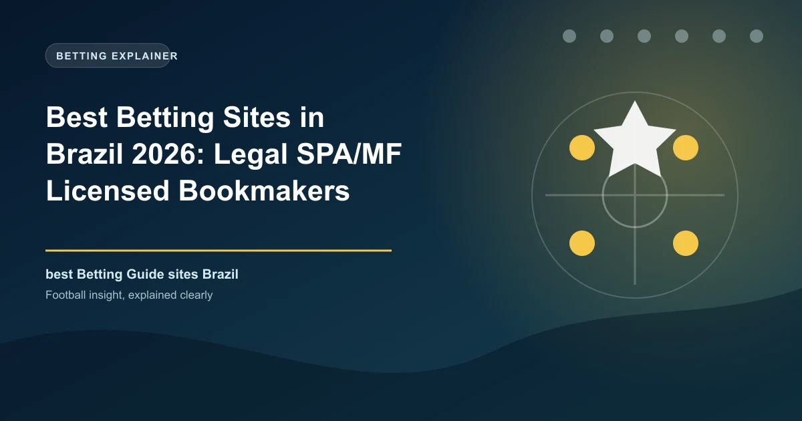

Best Betting Sites in Brazil 2026: Legal SPA/MF Licensed Bookmakers Ranked

Since the Lei das Bets came fully into force in January 2025, Brazil has a genuinely regulated betting market: every legal sportsbook must hold Ministry of Finance authorisation, run on a .bet.br domain and pay players out through Pix. Here are the sites that do it best.

Few markets have changed as completely as Brazil's. Before 2025, hundreds of bookmakers operated under Curacao and Malta licences with no local oversight. That era is over. Under Lei 14.790/2023 — the Lei das Bets — and the rules issued by the Secretaria de Prêmios e Apostas (SPA) within the Ministry of Finance, only operators holding federal authorisation may legally serve Brazilian bettors, and they must operate on the mandatory .bet.br domain.
Enforcement has been aggressive. The SPA published its first authorisations in December 2024, the market went fully operational for authorised operators in January 2025, and by mid-2026 the regulator had revoked or suspended 26 operators for non-compliance while more than 180 brands held valid authorisations. Unauthorised sites are blocked nationwide by Anatel, and the Central Bank's Pix rail handles the overwhelming majority of deposits. Betting in Brazil has never been safer — but only if you choose a licensed site.
This guide ranks the ten best licensed bookmakers in Brazil for 2026, judged on odds and market depth, Pix payout speed, bonus value under SPA rules, and mobile experience.
Brazil Betting at a Glance
| Factor | Detail |
|---|---|
| Currency | Brazilian Real (BRL / R$) |
| Regulator | SPA/MF (Secretaria de Prêmios e Apostas, Ministry of Finance) |
| Legal basis | Lei 13.756/2018 + Lei 14.790/2023 (Lei das Bets) |
| Mandatory domain | .bet.br for all authorised operators |
| Player ID | CPF (tax ID) required on every account |
| Payments | Pix (dominant), TED bank transfer, debit cards; credit cards banned |
| Prize tax | 15% IRRF withheld from winnings above R$2,112 |
| Biggest sports | Brasileirão, Copa do Brasil, Libertadores, state championships |
Regulation: What the Licence Actually Means
Authorisation is granted by SPA/MF to an individual betting company, and each brand it operates must list its own portaria number and use a .bet.br domain. The highest tier, a Federal Type A licence, costs around R$30 million a year and allows national operation; smaller state-partnership licences cover single states. In the first half of 2026 the top five operators — Betano, bet365, Stake.com Brasil, Sportingbet and EstrelaBet — controlled roughly 58% of the market's estimated R$25 billion annual handle.
Payments: Why Pix Changed Everything
Since January 2025, licensed Brazilian operators may only accept online payments via Pix, bank transfer (TED) and debit cards — credit cards are banned outright to curb over-indebtedness. Pix is near-universal: it is instant, free, available 24/7, and about 72% of all deposits move through the Central Bank's instant-payment rail. For withdrawals, SPA rules require operators to complete Pix payouts within a maximum of 2 hours, and the market leaders do it faster. This single change makes Brazil's payout experience better than most developed betting markets.
How We Ranked the Sites
We reviewed licensed Brazilian operators in mid-2026 using the official SPA/MF authorisation list, scoring them on football market depth and odds margins, Pix deposit and payout speed, bonus terms under regulated conditions, mobile app quality, and customer support in Portuguese.
The Top 10 Betting Sites in Brazil, Ranked
1. Betano — Market Leader
Betano (Kaizen Gaming) holds the largest market share among licensed operators — around 16% — and is the official sponsor of the Brasileirão and Copa do Brasil. Its Pix payouts are among the fastest in the country, usually landing within about a minute, with a R$5 minimum deposit and up to R$50,000 per transaction. The app is excellent, and football coverage is the deepest at the top of the market.
- Best for: overall, Brasileirão coverage, fast Pix
- Deposit min: R$5
- Withdrawal: ~1 minute via Pix
2. bet365 — Global Depth
bet365 Brasil (Hillside) brings the biggest international sportsbook into the regulated market, with unmatched market depth, in-play speed and live streaming. Its Pix payouts comply with the 2-hour rule and commonly clear faster, and the R$5 deposit minimum is friendly to casual players.
- Best for: market depth, live streaming, in-play
- Deposit min: R$5
3. Stake.com Brasil — Crypto Heritage, Regulated
Stake entered the regulated market through a licensed Brazilian entity separate from its offshore platform, and has grown to roughly 11% share on the strength of aggressive promotions and modern UX. Under regulation it operates with .bet.br branding while keeping the slick interface bettors know, with Pix-native deposits and withdrawals.
- Best for: promotions, modern interface
4. Sportingbet — Established Global Flutter Brand
Sportingbet Brasil, part of the Flutter group, holds a federal authorisation and serves Brazilian bettors with deep football markets and solid live betting. A lower headline bonus is offset by dependable operating history and strong quotant odds on state championships that smaller brands ignore.
- Best for: reliable global operator, state football
5. EstrelaBet — Domestic Fast-Riser
EstrelaBet is a Brazilian-grown brand backed by a state-partnership licence and one of the most aggressive marketing machines in the country, roughly 8% of market share. Its Pix-native model and generous promotions make it especially popular with mobile-first punters.
- Best for: promotions, domestic brand, mobile
6. Superbet — Lowest Entry For Pix
Superbet lets you start betting with just R$1 via Pix, the lowest minimum in the market, with per-transaction limits up to R$45,000 and no cap on the number of operations. Multi-builder promos on football make it a favourite of accumulator players.
- Best for: micro-deposits, multi-builder promos
- Deposit min: R$1 via Pix
7. KTO — Efficient Casual Play
KTO is a mid-tier operator that scores well on usability and respect for limits, with Pix minimums as low as R$0.01 for withdrawals — among the most flexible payout rules in the market. It is a clean, low-drama option for casual singles and live bets.
- Best for: flexible mini-payouts, casual play
8. Betsson — Swedish Reliability
Betsson's Brazilian entity brings a long-operating global brand into the regulated market with strong football odds and reliable Pix payouts, typically within the regulated window. Its loyalty programme rewards volume without demanding unrealistic turnover.
- Best for: loyalty rewards, dependable service
9. Pixbet — Pix-Native Domestic
Pixbet is built around Pix as the core of its product — deposits and withdrawals are advertised as being structured around full Pix-native flow, and it consistently ranks among the most-used Brazilian betting apps. Fine for brand sponsorships with top clubs, its football coverage is heavy on Brasileirão and Libertadores.
- Best for: Pix-native flow, Libertadores coverage
10. Novibet — International Addition
Novibet rounds out the ranking with a federal authorisation, solid football pricing and dependable Pix payouts within the regulated timeframe, plus a clean multi-platform app. It is a solid second account for line shoppers already on Betano or bet365.
- Best for: line shopping, secondary account
Quick Comparison Table
| Site | Best For | Min Deposit | Pix Withdrawal | Remark |
|---|---|---|---|---|
| Betano | Overall | R$5 | ~1 min | Brasileirão official sponsor |
| bet365 | Market depth | R$5 | ≤2h (often faster) | Best live streaming |
| Stake.com Brasil | Promos | R$5 | ≤2h | Regulated local entity |
| Sportingbet | Reliability | R$5 | ≤2h | Flutter group |
| EstrelaBet | Domestic brand | R$5 | ≤2h | Fast-rising challenger |
| Superbet | Micro-deposits | R$1 | ≤2h | Multi-builder promos |
| KTO | Mini withdrawals | R$5 | from R$0.01 | Low-drama casual play |
| Betsson | Loyalty | R$5 | ≤2h | Global operator |
| Pixbet | Pix-native | R$5 | ≤2h | Domestic apps |
| Novibet | Second account | R$10 | ≤2h | Clean platform |
Bonuses Under Regulated Rules
SPA rules have cleaned up bonuses dramatically. Offers must now be honest, with clear turnover terms and no misleading headline tricks. Betano leads with bet-builder perks up to 25% on selected football markets during Brasileirão rounds, while Sportingbet and EstrelaBet run competitive cash bonuses with modest rollover. Remember that winnings above R$2,112 are subject to a 15% IRRF withholding deducted at source — factor that into expected returns just as you would any tax.
How to Choose Your Brazilian Betting Site
Start by confirming every candidate is on the official SPA/MF list and uses a .bet.br domain — skip any site that is not, no matter how tempting the offer. For deep football markets and in-play, Betano and bet365 lead. For the lowest deposit and casual play, Superbet and KTO are excellent. For promotions and mobile-first action, EstrelaBet and Pixbet hold their own. Open two or three accounts and compare prices on the same Brasileirão fixtures — margins can differ by 2–4% between licensed operators, and that gap compounds over a season.
Responsible Gambling in Brazil
Licensed operators are legally required to offer deposit limits, time-outs and self-exclusion, and to screen for problem-gambling behaviour through their risk systems. Set limits before you start, only wager money you can afford to lose, and treat betting as entertainment. If betting stops being fun, use the operator's exclusion tools or seek support.
Frequently Asked Questions
Are betting sites legal in Brazil?
Yes, but only licensed operators. Under Lei das Bets (Lei 14.790/2023), sportsbooks must hold federal authorisation from SPA/MF, operate on a .bet.br domain and comply with strict rules. Unauthorised sites are blocked by Anatel.
Which is the best betting site in Brazil?
Betano is the leading licensed operator for overall quality and speed, followed closely by bet365 for market depth. Superbet is best for the lowest deposits (R$1 via Pix) and EstrelaBet for promotions.
How do I deposit and withdraw in Brazil?
Pix is the dominant method — instant, free and available 24/7. Licensed operators must pay out via Pix within a maximum of about two hours, and market leaders like Betano do it in around a minute. TED and debit cards are also permitted; credit cards are banned.
Do I pay tax on betting winnings in Brazil?
Yes. Winnings above R$2,112 are subject to a 15% IRRF withholding, deducted automatically by the operator before you receive your Pix payout. Smaller prizes are tax-free.
How can I tell if a Brazilian betting site is licensed?
Check for a SPA/MF portaria number in the footer, confirm the domain ends in .bet.br, and verify the company's CNPJ against the Sigap system run by the Ministry of Finance.
Put These Principles Into Practice Today
Every strategy on this page is only as good as the markets you apply it to. Check the latest predictions, odds, and in-play opportunities below.
Last updated: August 2026 | By Tochukwu Mesigo |
Build Winning Accumulator Tickets
Generate optimized accumulator combinations from today's data-driven predictions. Set your target odds and get instant ticket suggestions.
Pro Ticket Builder →